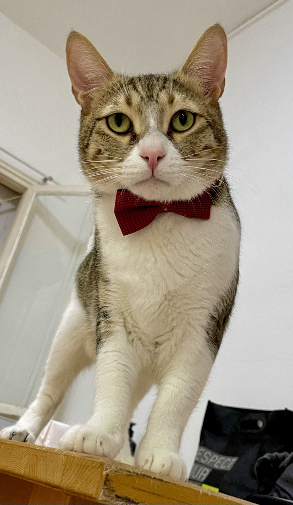

I am deeply interested in the intersection of vision and language, as well as commonsense reasoning. My recent research focuses on challenging the visual reasoning capabilities of models, particularly in abductive reasoning. Some papers are highlighted.
Will a Visual Language Model (VLM)-based bot warn us about slipping if it detects a wet floor? Recent VLMs have demonstrated impressive capabilities, yet their ability to infer outcomes and causes remains underexplored. To address this, we introduce NL-Eye, a benchmark designed to assess VLMs' visual abductive reasoning skills. NL-Eye adapts the abductive Natural Language Inference (NLI) task to the visual domain, requiring models to evaluate the plausibility of hypothesis images based on a premise image and explain their decisions.
Text-To-Image (TTI) models, such as DALL-E and StableDiffusion, have demonstrated remarkable prompt-based image generation capabilities. Multilingual encoders may have a substantial impact on the cultural agency of these models, as language is a conduit of culture. In this study, we explore the cultural perception embedded in TTI models by characterizing culture across three hierarchical tiers: cultural dimensions, cultural domains, and cultural concepts. Based on this ontology, we derive prompt templates to unlock the cultural knowledge in TTI models, and propose a comprehensive suite of evaluation techniques, including intrinsic evaluations using the CLIP space, extrinsic evaluations with a Visual-Question-Answer (VQA) model and human assessments, to evaluate the cultural content of TTI-generated images. To bolster our research, we introduce the CulText2I dataset, derived from six diverse TTI models and spanning ten languages. Our experiments provide insights regarding Do, What, Which and How research questions about the nature of cultural encoding in TTI models, paving the way for cross-cultural applications of these models.
Text-to-image diffusion models (T2I) use a latent representation of a text prompt to guide the image generation process. However, the process by which the encoder produces the text representation is unknown. We propose the Diffusion Lens, a method for analyzing the text encoder of T2I models by generating images from its intermediate representations. Using the Diffusion Lens, we perform an extensive analysis of two recent T2I models. Exploring compound prompts, we find that complex scenes describing multiple objects are composed progressively and more slowly compared to simple scenes; Exploring knowledge retrieval, we find that representation of uncommon concepts requires further computation compared to common concepts, and that knowledge retrieval is gradual across layers. Overall, our findings provide valuable insights into the text encoder component in T2I pipelines.
Sep 2024: Outstanding TA Award for excellence as a Teaching Assistant in a Python course, CS Faculty.
Just a Bit About Me 🐾🎥📚🌍
Hi there! Beyond my research, I’m an animal lover and proud companion to the adorable fluffball:
 Guddi the cat
.
I’m a big fan of food 🍲, running 🏃♂️, movies 🎥, books 📚, and traveling 🌍✈️.
Feel free to steal this website's source code. Do not scrape the HTML from this page itself, as it includes analytics tags that you do not want on your own website — use the github code instead. Also, consider using Leonid Keselman's Jekyll fork of this page.
{kind=link}